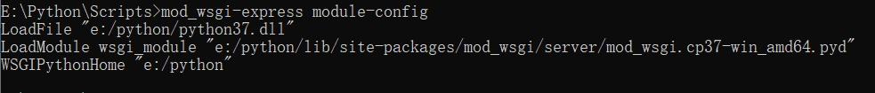
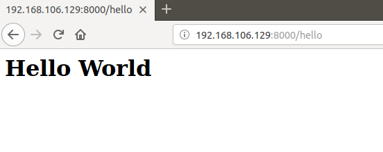

Flask 作为一个轻量级的 Web 框架，具有诸多优点，灵活方便，扩展性强，开发文档也很丰富。在开发调试的过程中，我们往往会使用 Flask 自带的 Web 服务器，但如果要投入到生产环境中，就需要选择使用功能完整的服务器了。说到部署 Flask，就不得不提 WSGI 了，那么 WSGI 又是什么呢？ Flask 项目又要怎么部署呢？
WSGI（Python Web Server Gateway Interface）：Python Web 服务器网关接口，是 Python 语言定义的 Web 服务器和 Web 应用程序之间一种简单通用的接口。WSGI 分为两个部分，一个是“服务器”或“网关”，一个是“应用程序”或“应用框架”，在处理一个请求时，服务器为应用程序提供环境信息及一个回调函数，当应用程序完成处理请求后，通过回调函数将结果回传给服务器。
Apache 是一个模块化的服务器，由于其多平台和安全性，成为世界排名第一的 Web 服务器软件，它可以运行在几乎所有广泛使用的计算机平台上。Apache 是以进程为基础的结构，进程比线程开销大，因而不适用于多处理器环境。要使用 Apache 来部署 Flask 的时候，需要先安装 mod_wsgi。
（1）Gunicorn：是一个 unix 上被广泛使用的高性能的 WSGI HTTP 服务器，和大多数的web框架兼容，并具有实现简单，轻量级，高性能等特点。Gunicorn 会开启大量进程，等待并处理接收到的请求，每个单独进程能同时处理它们接收到的请求，避免进程启动和销毁的开销。
（2）Tornado：是一款开源的可伸缩、非阻塞式的 Web 服务器和工具集，在高并发的应用场景中有不错的效果。同样，要想通过 Tornado 来部署 Flask 也是很简便的。
（3）Gevent：是一个基于协同程序的python库，与tornado的部署方式类似，通过gevent部署flask也是十分的便利。
uWSGI 也是部署 Flask 的途径之一，类似的部署途径还有 nginx。使用 uWSGI 协议来部署 WSGI 应用的先决条件是 需要一个 uWSGI 服务器。 uWSGI 既是一个协议也是一个服务器，如果作为一个服务器， 它可以服务于 uWSGI 、 FastCGI 和 HTTP 协议。
Python 版本：3.7.0，下载地址：https://www.python.org/downloads/release/python-370/。
Flask 版本：1.1.1，下载安装：pip install flask==1.1.1。
Apache 版本：2.4，下载地址：https://www.apachelounge.com/download/VS16/binaries/httpd-2.4.41-win64-VS16.zip。下载完成后解压，例如解压到 E:/Apache 目录下。
在 cmd 中切换到该目录，再进入 bin 目录，然后输入 httpd，打开浏览器，输入 http://localhost，若页面上显示 “It works!”，则表明 Apache 启动成功。
1）若输入 httpd 后报错：Syntax error on line 39 of E:/Apache24/conf/httpd.conf: ServerRoot must be a valid directory
解决办法：根据显示的目录信息找到 httpd.conf 文件，打开后找到 Define SRVROOT "" 这一行，"" 内的内容改为 Apache 路径，保存后重启 Apache，则问题解决。
2）若输入 httpd 后报错： Could not reliably determine the server's fully qualified domain name...
解决办法：还是找到 httpd.conf 文件，打开后找到 ServerName www.example.com:80 这一行，若这行被注释则取消注释，若找不到则添加此内容。
mod_wsgi 要下载对应的版本，比如我的电脑是 Windows 64位，Python 版本是3.7，Apache 版本是2.4，最后下载的 mod_wsgi 就是 mod_wsgi-4.5.24+ap24vc14-cp37-cp37m-win_amd64.whl，至于具体的版本，可以在这里查找和下载。下载完成之后将 .whl 文件移动到 Python/Scripts 下，然后使用 pip 进行安装。
pip install "mod_wsgi-4.5.24+ap24vc14-cp37-cp37m-win_amd64.whl"
安装成功之后，在 Scripts 目录下运行如下命令：
mod_wsgi-express module-config
运行成功之后会输出三行结果，截图如下：

将这三行内容复制下来，打开 Apache/conf/httpd.conf ，其中有几十条 LoadModule 命令，然后将复制的内容粘贴到后面，再将下面两条命令的注释取消掉。
LoadModule rewrite_module modules/mod_rewrite.so
LoadModule vhost_alias_module modules/mod_vhost_alias.so
保存后重启 Apache 即可。
假设 flask 项目目录为：E:/Code/flask_test，其中有两个文件：app.py 和 test.wsgi。
app.py 中的代码为：
1 from flask import Flask
2
3
4 app = Flask(__name__)
5
6
7 @app.route('/hello')
8 def hello():
9 return "<h1>Hello World</h1>"
10
11
12 if __name__ == '__main__':
13 app.run()test.wsgi 中的内容为：
1 import sys
2
3 sys.path.insert(0, "E:/Code/flask_test")
4
5 from app import app as application打开 httpd.conf 文件，找到 Listen 80，修改为 Listen 8000。然后添加如下配置信息：
<VirtualHost *:8000>
ServerAdmin admin@example.com
WSGIScriptAlias / E:/Code/flask_test/test.wsgi
<Directory 'E:/Code/flask_test/'>
Require all granted
Require host ip
</Directory>
</VirtualHost>保存后重启 Apache 服务器。
打开浏览器，输入http://127.0.0.1:8000/hello，若网页上显示“Hello World”，则表明部署成功，除此之外，还可以使用 postman 进行测试，地址为 http://<本机IP>:8000/hello。
由于我使用的 Ubuntu 自带有 Python3.6，因此就不用再安装 Python 了，需要做的就是安装 pip、Flask 和 uwsgi，使用的命令如下：
sudo apt-get update
sudo apt-get install python3-pip
pip3 install flask uwsgi
除了安装 Python 和相应的库之外，还需要安装 nginx，使用 sudo apt-get install nginx 安装即可。环境配置的过程不都是一帆风顺的，下面记录几个可能出现的问题及解决方案：
1）在安装 pip 时报如下错误：Unable to fetch some archives, maybe run apt-get update or try with --fix-missing?
解决办法： sudo apt-get install python3-pip --fix-missing
2）安装 uwsgi 时出错：plugins/python/uwsgi_python.h:2:10: fatal error: Python.h: No such file or directory
出错原因时系统缺少 python-dev，解决办法：先安装 python-dev，再安装 uwsgi
sudo apt-get install python-dev
sudo apt-get install python36-dev （若上面的命令执行失败可以尝试用这一条，版本依据你自己实际情况而定）
pip3 install uwsgi
假设 flask 项目目录为：/home/tm/Desktop/flask_test，其中一个文件：app.py，其中的代码为：
1 from flask import Flask
2
3
4 app = Flask(__name__)
5
6
7 @app.route('/hello')
8 def hello():
9 return "<h1>Hello World</h1>"
10
11
12 if __name__ == '__main__':
13 app.run()使用 uwsgi 来部署 Flask 项目只需要换一种方式启动服务即可，使用到的命令为：
uwsgi --socket 0.0.0.0:8000 --protocol=http -p 3 -w app:app
其中几个参数的含义如下：
--socket 0.0.0.0:8000：指定暴露端口号8000；
--protocol=http：指定使用的协议为 HTPP 协议；
-p 3：表示启动的服务占用3个进程；
-w app:app：-w 指明要启动的模块，第一个 app 指明 py 文件，第二个 app 指明 Flask 实例。
启动完成之后，就可以在任意网络连通的机器上访问了，下面是在浏览器中访问的示例截图：

至此，我们就已经成功使用 uwsgi 部署 Flask 项目了。
首先需要编写一个配置文件，那样我们启动服务的时候就不用手动输入参数了，例如编辑 /home/tm/Desktop/flask_test/uwsgi.ini：
[uwsgi]
module = app:app
master = true
processes = 3
chdir = /home/tm/Desktop/flask_test
socket = 127.0.0.1:8000
chmod-socket = 660
vacuum = true
此时，就可以使用如下命令开启 uwsgi 服务了：
uwsgi --ini /home/tm/Desktop/flask_test/uwsgi.ini
此时，我们已经正常启动了uWsgi服务，但是无法直接访问，需要继续部署Nginx服务。下面需要编辑 nginx 的配置文件 /home/tm/Desktop/flask_test/nginx.conf：
worker_processes 4;
events { worker_connections 1024; }
http {
include mime.types;
default_type application/octet-stream;
server {
listen 80;
location / {
include uwsgi_params;
uwsgi_pass 127.0.0.1:8000;
}
}
}
配置结束之后运行如下命令启动 nginx 服务，启动无误后，由于 nginx 监听的是80端口，所以我们就可以通过本机地址访问了。
nginx -c /home/tm/Desktop/flask_test/nginx.conf
在运行的时候可能会报错，下面是几个可能出现的问题及对应的解决方案：
1）报错信息：nginx: [alert] could not open error log file: open() "/var/log/nginx/error.log" failed (13: Permission denied)
解决方案：报此错误信息是因为权限不够，加上权限执行即可。
2）报错信息：open() "/home/sgx/Desktop/flask_test/mime.types" failed (2: No such file or directory)
解决方案：报此错误信息是因为项目目录下没有 mime.types 文件，找到 nginx 目录，将目录下的 mime.types 文件复制到项目目录即可。